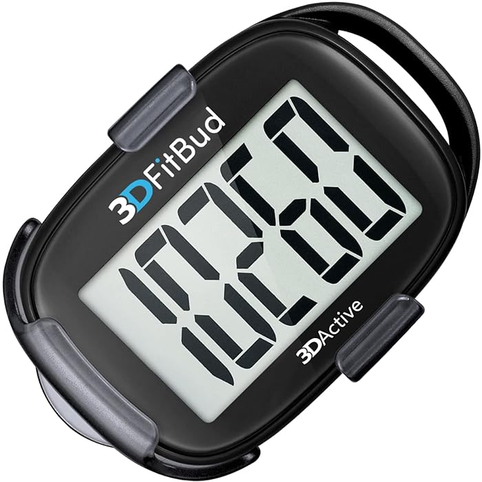
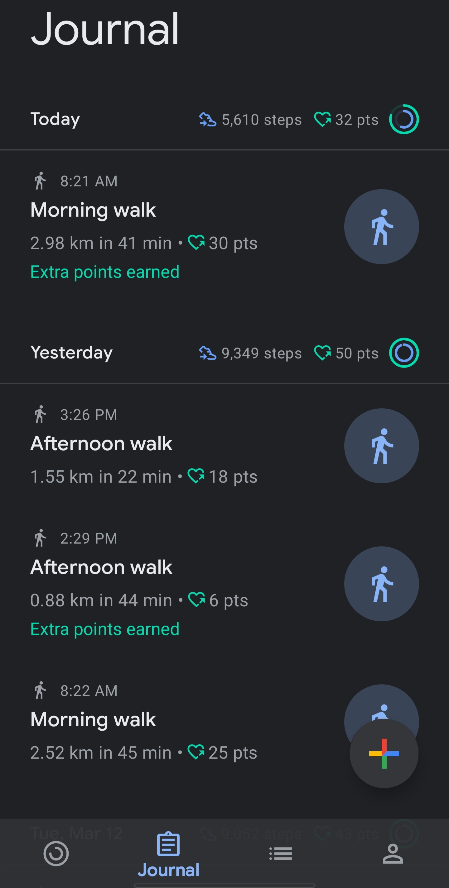
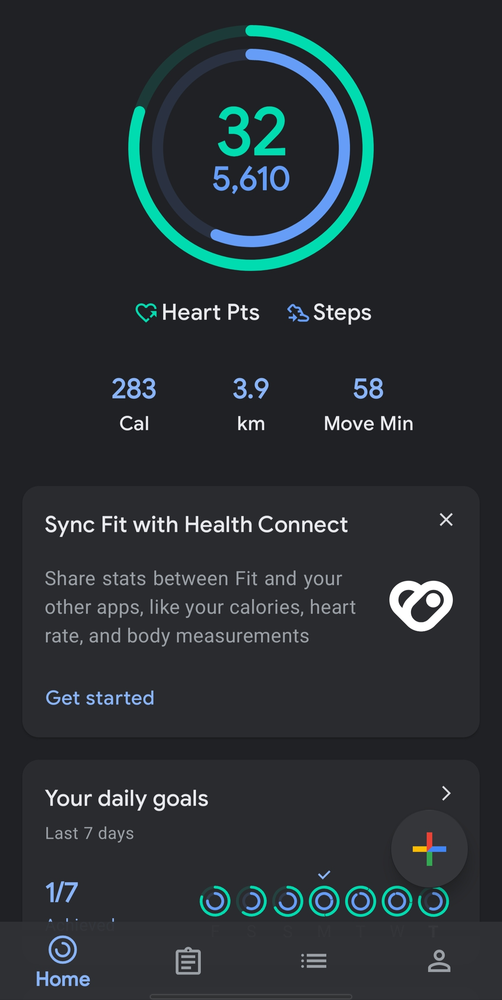
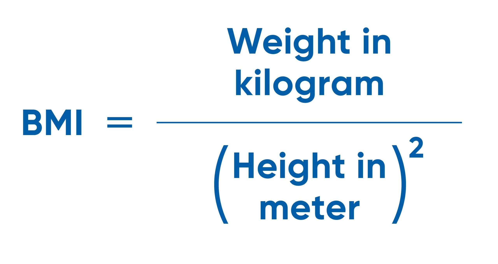
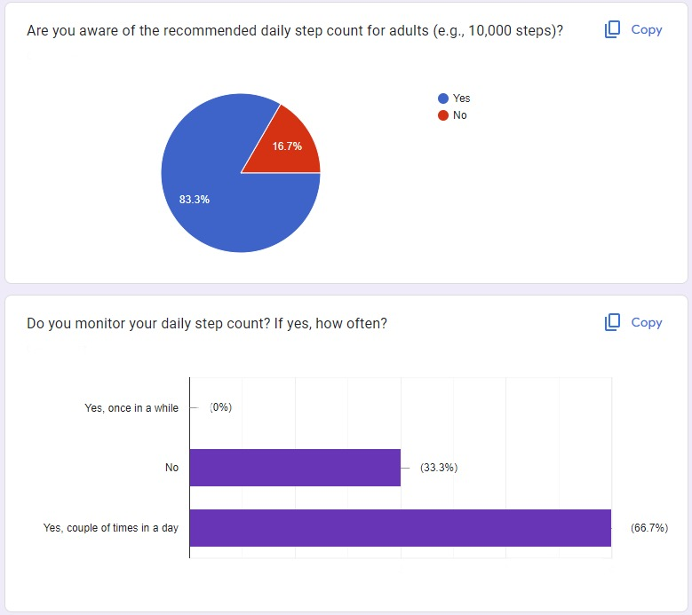

Step goal and why 10K specifically: I choose 10,000 steps per day, which equates to walking about 5 miles, because it has been a benchmark health goal for a while. (Interesting fact: The number originated as part of a marketing campaign for an early step counter leading up to the 1964 Tokyo Olympics, and has become the adopted benchmark of daily step counts.Walking 10,000 steps daily will help you feel more focused, sharp and happier—leading to fewer feelings of physical tension, providing both mental and physical benefits," according to Rachel MacPherson, CPT, an American Council on Exercise-certified personal trainer with Garage Gym Reviews.
BMI: While NHS UK does the same thing of measuring BMI using the Weight and and height while still having a nice UI and user centered design, it is very annoying and asks weird questions about race and ethinicity which might discourage the user from finding out his BMI and completing the whole assessment. My solution gives you, your BMI in a float and assign a health category for you instantly based on your BMI without any Fuss and the user can find what his assigned health category is in seconds rather than having to find in a page full of very general and basic tips.
BPM: Existing solution like Fitbit exist and are able to monitor your heart´s beats per minute but are too expensive (150 euro and above) whereas my solution is super affordable and is very accessible. I found that the user might have difficulties navigating throughout the watch to find out his BPM in a Fitbit watch due to how complicated a Fitbit is, another benefit of using a Microbit and a pulse sensor to monitor BPM is the high energy efficiency of them.
Inspiration: I got my inspiration from my phone where I check my steps daily and always wonder how low my BPM is when I am resting and want to find out the relationship between doing 10000 steps and health and fitness and wellbeing. I also wanted to help user beat his struggle, for example if they are underweight, they get useful tips on how to bulk and what to do next i.e. inform them about future wellbeing decisions.




